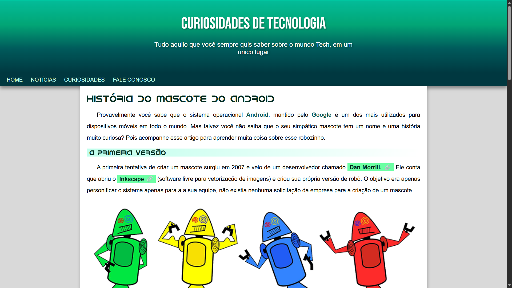
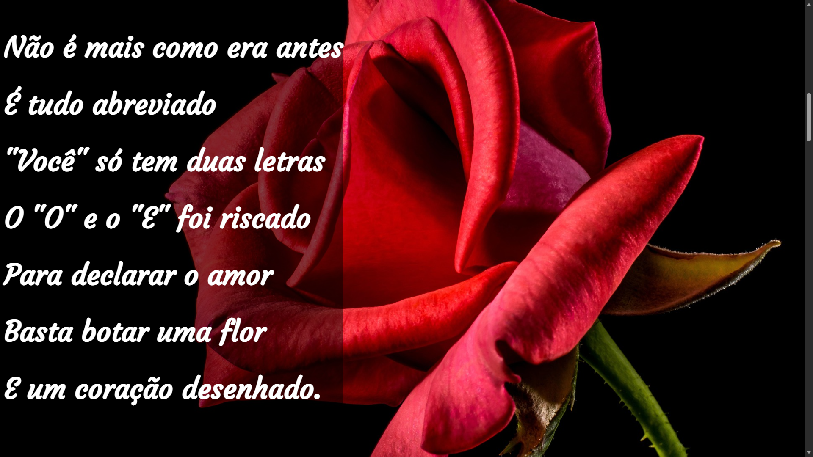
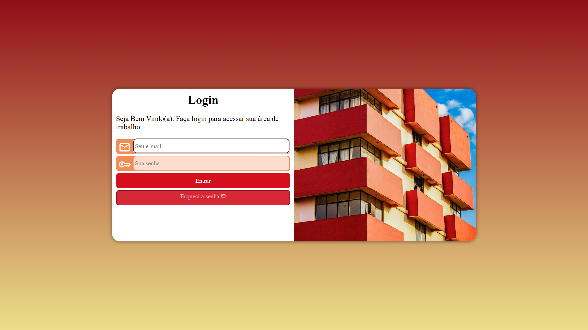
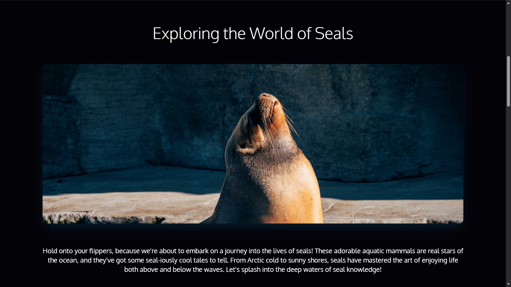

Aloisio Martins
Estudande de desenvolvimento de software, apaixonado por tecnologia e inovação. Com experiência em projetos acadêmicos e pessoais, busco constantemente aprimorar minhas habilidades e contribuir para o desenvolvimento de soluções criativas e eficientes. Estou aberto a oportunidades de estágio e colaboração em projetos desafiadores.
Minhas skills
HTML5
90%
CSS3
80%
JavaScript
50%
Trabalho em Equipe
90%
Adaptalidade
90%
Formação
2025 - Atual
Grupo Anchieta
Técnico em Desenvolvimento de Sistemas
Projetos

2024
Projeto Android
Projeto construído com HTML e CSS para treinar conteúdos e imagens dinâmicas.
Saiba mais....
A estrutura do Projeto Android é simples e organizada, com foco em conteúdo educativo e design limpo, permitindo uma leitura agradável e clara. O projeto demonstra habilidades em: HTML e CSS para construção e estilização da página. Uso de imagens e tipografia para reforçar a narrativa visual. Organização semântica do conteúdo, destacando títulos, seções e listas.

2024
Projeto Cordel
Projeto construído para treinar efeito paralax em imagens.
Saiba mais....
Projeto de página web que apresenta um poema em estilo de literatura de cordel, com design simples e foco no texto. O site valoriza a leitura e a cultura popular, trazendo versos rimados em formato digital. Confira aqui

2024
Projeto Login
Projeto construído para treinar meus conhecimentos de formulário.
Saiba mais....
Esse site é um projeto de página de login responsiva, desenvolvido com HTML, CSS e JavaScript. Ele apresenta uma interface simples e moderna, com campos de usuário e senha, além de botões estilizados para interação. O design é pensado para ser limpo e funcional, destacando boas práticas de estruturação e estilização de formulários. Confira aqui

2025
Projeto Site
Projeto construído com HTML e CSS.
Saiba mais....
Projeto de página web temática sobre focas, com foco em conteúdo educativo e visual atrativo. O site apresenta informações organizadas de forma clara, com imagens e texto que destacam curiosidades e características desses animais. Confira aqui